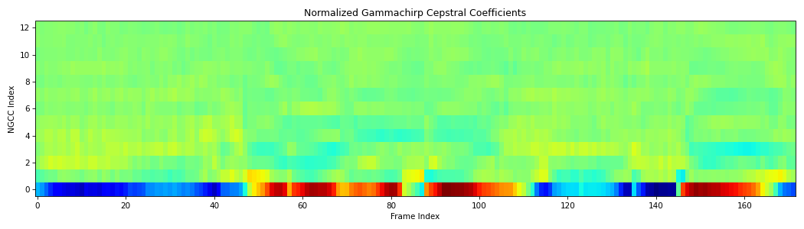

spafe.features.ngcc#
Description : Normalized Gammachirp Cepstral Coefficients (NGCCs) extraction algorithm implementation.
Copyright (c) 2019-2023 Ayoub Malek. This source code is licensed under the terms of the BSD 3-Clause License. For a copy, see <https://github.com/SuperKogito/spafe/blob/master/LICENSE>.
- spafe.features.ngcc.ngcc(sig: numpy.ndarray, fs: int = 16000, num_ceps=13, pre_emph: bool = True, pre_emph_coeff: float = 0.97, window: Optional[spafe.utils.preprocessing.SlidingWindow] = None, nfilts: int = 24, nfft: int = 512, low_freq: Optional[float] = None, high_freq: Optional[float] = None, scale: Literal['ascendant', 'descendant', 'constant'] = 'constant', dct_type: int = 2, use_energy: bool = False, lifter: Optional[int] = None, normalize: Optional[Literal['mvn', 'ms', 'vn', 'mn']] = None, fbanks: Optional[numpy.ndarray] = None, conversion_approach: Literal['Glasberg'] = 'Glasberg') numpy.ndarray[source]#
Compute the normalized gammachirp cepstral coefficients (NGCC features) from an audio signal according to [Zouhir].
- Parameters
sig (numpy.ndarray) – input mono audio signal (Nx1).
fs (int) – signal sampling frequency. (Default is 16000).
num_ceps (int) – number of cepstra to return. (Default is 13).
pre_emph (bool) – apply pre-emphasis if 1. (Default is True).
pre_emph_coeff (float) – pre-emphasis filter coefficient. (Default is 0.97).
window (SlidingWindow) – sliding window object. (Default is None).
nfilts (int) – the number of filters in the filter bank. (Default is 40.
nfft (int) – number of FFT points. (Default is 512).
low_freq (float) – lowest band edge of mel filters (Hz). (Default is 0).
high_freq (float) – highest band edge of mel filters (Hz). (Default is samplerate / 2).
scale (str) – monotonicity behavior of the filter banks. (Default is “constant”).
dct_type (int) – type of DCT used. (Default is 2).
use_energy (bool) – overwrite C0 with true log energy (Default is False).
lifter (int) – apply liftering if specified. (Default is None).
normalize (str) – apply normalization if specified. (Default is None).
fbanks (numpy.ndarray) – filter bank matrix. (Default is None).
conversion_approach (str) – erb scale conversion approach. (Default is “Glasberg”).
- Returns
2d array of NGCC features (num_frames x num_ceps)
- Return type
Tip
scale: can take the following options [“constant”, “ascendant”, “descendant”].dct: can take the following options [1, 2, 3, 4].normalize: can take the following options [“mvn”, “ms”, “vn”, “mn”].conversion_approach: can take the following options [“Glasberg”]. Note that the use of different options than the default can lead to unexpected behavior/issues.
Note

Architecture of normalized gammachirp cepstral coefficients extraction algorithm.#
Examples
from scipy.io.wavfile import read from spafe.features.ngcc import ngcc from spafe.utils.preprocessing import SlidingWindow from spafe.utils.vis import show_features # read audio fpath = "../../../tests/data/test.wav" fs, sig = read(fpath) # compute ngccs ngccs = ngcc(sig, fs=fs, pre_emph=1, pre_emph_coeff=0.97, window=SlidingWindow(0.03, 0.015, "hamming"), nfilts=128, nfft=2048, low_freq=0, high_freq=8000, normalize="mvn") # visualize features show_features(ngccs, "Normalized Gammachirp Cepstral Coefficients", "NGCC Index", "Frame Index")
 References
- Zouhir
: Zouhir, Y., & Ouni, K. (2016). Feature Extraction Method for Improving Speech Recognition in Noisy Environments. J. Comput. Sci., 12, 56-61.